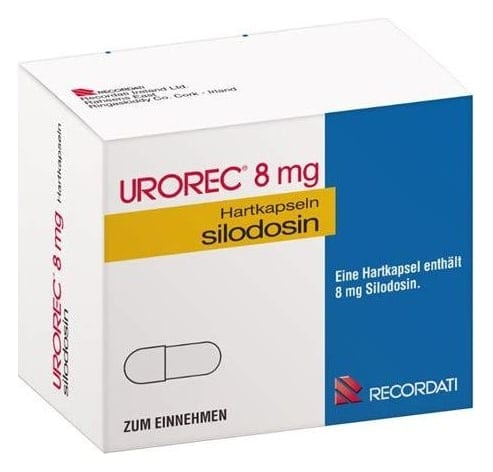

Urorec 8 mg Kapsül, 30 Adet

Ne için kullanılır
KT · Bölüm 1UROREC alfa,A adrenoseptör blokörleri olarak adlandırılan bir ilaç grubuna girer. UROREC prostatta, idrar torbasında, idrar yollarında bulunan reseptörler için seçicidir ve bu reseptörleri bloke ederek bu dokulardaki düz kasların gevşemesine neden olur. Bu da idrara çıkmanızı kolaylaştırır ve şikayetlerinizi hafifletir. UROREC erkek hastalarda prostatın selim büyümesine (prostatik hiperplazi) bağlı gelişen idrar yollarınızdaki şikayetlerinizi tedavi etmek için kullanılır, örneğin e İdrar yapmaya başlamada zorluk, e İdrar torbasını tamamen boşaltamama hissi, e Geceleri de dahil olmak üzere idrar yapmaya daha sık ihtiyaç duymak. 1/6